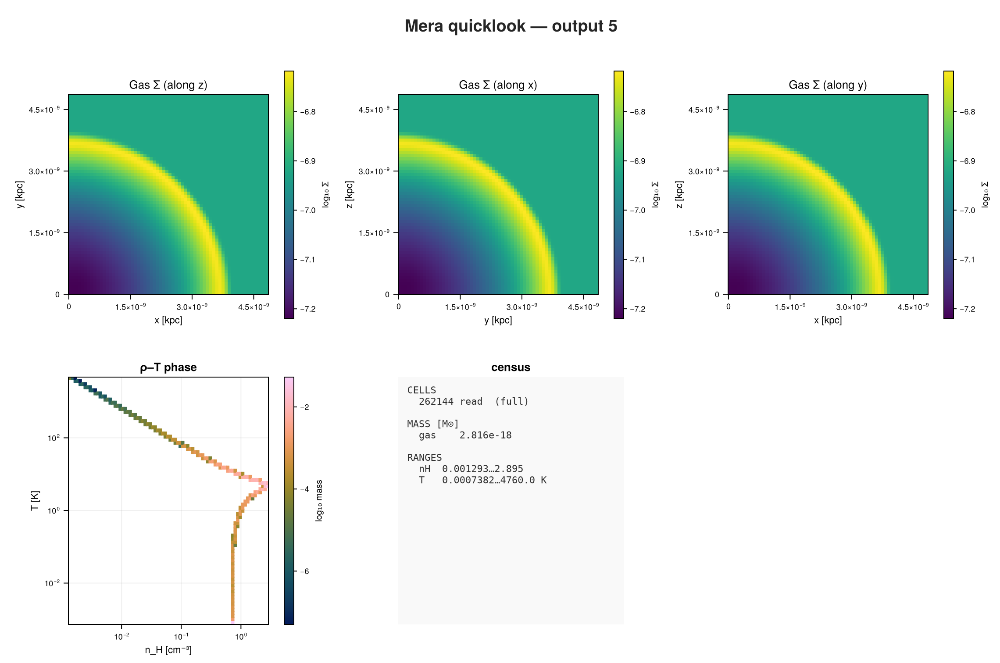
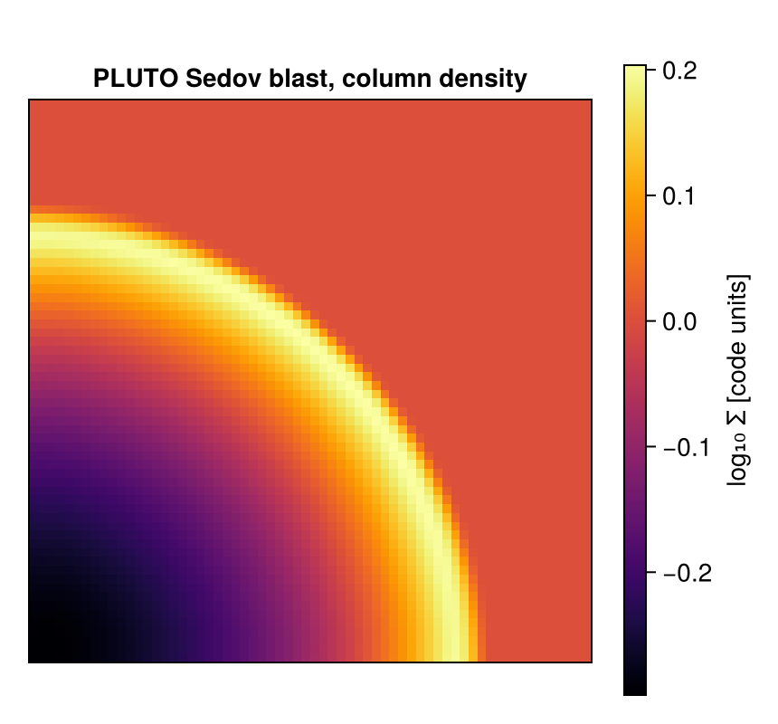

PLUTO: First Inspection
This page is also an executable Jupyter notebook: open / download 40_pluto_First_Inspection.ipynb. The notebooks run end-to-end and double as part of Mera's test suite.
This page opens a PLUTO snapshot and looks at what is inside it. It is the shortest path from a file on disk to a picture, and it is the same path you would take with any other code Mera reads.
The run is a 3-D Sedov blast: a point explosion in a uniform box, 64³ cells.
This snapshot was produced locally, so you cannot download this exact one. Everything below works the same on your own PLUTO output: change the path and the output number. A public PLUTO-AMR snapshot is used on the Chombo page.
1. One call to see everything
quicklook is the fastest way to find out what an unfamiliar snapshot holds. It reads the gas, makes projections along all three axes and a phase diagram, and prints a summary.
using Mera, CairoMakie
path = "/Volumes/FASTStorage/Simulations/Mera-Tests/PLUTO/pluto_sedov3d"
# PLUTO stores neither its unit constants nor its gas composition in the output.
# The units come from this run's log; the composition is PLUTO's default, fully ionised.
UL, UD, UV = 1.496e13, 1.673e-24, 1e5 # cm, g/cm^3, cm/s (1 AU, 1 proton/cm^3, 1 km/s)
ql = quicklook(5; path=path, unit_length=UL, unit_density=UD, unit_velocity=UV,
X_frac=0.711, mu=0.614);*__ __ _______ ______ _______
| |_| | | _ | | _ |
| | ___| | || | |_| |
| | |___| |_||_| |
| | ___| __ | |
| ||_|| | |___| | | | _ |
|_| |_|_______|___| |_|__| |__|
Mera v2.0.0-DEV | Julia 1.12.7 | 8 threads
[ Info: Mera v2.0.0-DEV
[Mera]: quicklook output 5, reading gas: 2026-09-15T19:33:39.747
1 CPU file(s), levels 6-6 of 6 (full resolution)
projecting 3 gas map(s) [z, x, y] and the phase diagram from 262144 cells
┌─ Mera quicklook ── output 5 (PLUTO) ───────────────
│ box : 4.848e-9 kpc levels 6–6 (finest 7.575e-8 pc)
│ grid : ndim 3 · ncpu 1 · nvarh 5
│ time : 2.37e-6 Myr (non-cosmological)
│ read : 262144 cells (full resolution)
│ gas mass : 2.816e-18 M⊙
│ nH range : 0.001293 … 2.895 cm⁻³
│ T range : 0.0007382 … 4760.0 K
└─ 6.24 s ──────────────────────────────────
[Mera]: quicklook output 5 finished: 2026-09-15T19:33:43.720quicklook prints the summary and keeps the maps it made. It does not draw them, so that Mera needs no plotting package to run. Pass the result to quicklookplot when you want the picture:
quicklookplot(ql)
Three column-density maps, one along each axis, and a density-temperature diagram.
The phase diagram is a thin curve rather than a cloud, and that is the run telling you what physics it contains. This blast is adiabatic: no cooling, no heating, no chemistry. Every cell started from the same uniform gas, so its temperature is fixed by the shock strength it met, and density and temperature end up almost one-to-one. A simulation with cooling and heating pulling against each other fills the plane instead.
The header names the code it found: output 5 (PLUTO). You never told it the format.
Why the three constants. PLUTO writes its unit constants into the run's compiled definitions.h, not into the output, so Mera cannot read them. Without them it treats one code unit as one CGS unit and every physical number is meaningless. This run's run.log records them, so we pass them in and the box, the masses and the densities are real.
2. The details: getinfo
getinfo reads the small metadata files, not the data. It is fast, and it is how you decide what to load.
info = getinfo(5, path; unit_length=UL, unit_density=UD, unit_velocity=UV);
setcomposition!(info; X_frac=0.711, mu=0.614);[Mera]: 2026-09-15T19:34:00.395
Code: PLUTO
output: 5 time: 0.5 [code units]
grid: 64³ uniform Cartesian, level 6, boxlen = 1.0
variables: (rho, vx, vy, vz, p)
-------------------------------------------------------
[Mera]: composition not recorded by this format; using X = 0.76, mu = 1.32 (RAMSES convention) for :nH and :T. Change with setcomposition!(info; X_frac=…, mu=…).Everything you need first: which code wrote it, the snapshot time, the grid, and the variables the file contains. The answer is kept in info.simcode.
info.simcode, info.levelmin, info.levelmax, info.boxlen, info.variable_list("PLUTO", 6, 6, 1.0, [:rho, :vx, :vy, :vz, :p])This run is a uniform grid: levelmin == levelmax, so there is one resolution everywhere. An AMR snapshot shows a range here instead.
3. What else could be loaded?
A snapshot does not always hold every kind of data. Ask, rather than guess.
capabilities(info) # what this code can provide3-element Vector{Symbol}:
:info
:hydro
:particlessupports(info, :gravity) # ... and what it cannotfalsePLUTO can carry particles as well as gas, so both are listed. This particular run is gas only, so the rest of the page uses gethydro. Asking for something a code does not support fails with a message naming what it does have, instead of returning something wrong.
4. Load the gas
The same call you would use on a RAMSES snapshot.
gas = gethydro(info);[Mera]: PLUTO hydro 262144 cells (of 262144), vars rho, vx, vy, vz, p5. What the data looks like
Mera keeps the cells as one table, one row per cell.
gas.dataTable with 262144 rows, 8 columns:
cx cy cz rho vx vy vz p
───────────────────────────────────────────────────────────────────
1 1 1 0.00194566 0.00435383 0.00443672 0.0045208 0.116222
1 1 2 0.00194477 0.00436522 0.0044479 0.013515 0.116223
1 1 3 0.00194189 0.00441037 0.0044923 0.0223949 0.116224
1 1 4 0.00193689 0.00451584 0.00459599 0.0309676 0.116226
1 1 5 0.00192981 0.00470266 0.00477949 0.0389575 0.116228
1 1 6 0.00192079 0.00497677 0.00504826 0.046035 0.11623
1 1 7 0.00191002 0.00532228 0.0053862 0.0518926 0.116233
1 1 8 0.00189779 0.0057012 0.00575575 0.0563256 0.116236
1 1 9 0.00188451 0.00606422 0.00610846 0.0593297 0.11624
1 1 10 0.00187065 0.00636865 0.00640264 0.0609904 0.116243
1 1 11 0.0018568 0.00659378 0.00661835 0.0617348 0.116248
1 1 12 0.00184345 0.00674445 0.00676144 0.0616345 0.116248
⋮
64 64 54 1.0 0.0 0.0 0.0 1.0e-5
64 64 55 1.0 0.0 0.0 0.0 1.0e-5
64 64 56 1.0 0.0 0.0 0.0 1.0e-5
64 64 57 1.0 0.0 0.0 0.0 1.0e-5
64 64 58 1.0 0.0 0.0 0.0 1.0e-5
64 64 59 1.0 0.0 0.0 0.0 1.0e-5
64 64 60 1.0 0.0 0.0 0.0 1.0e-5
64 64 61 1.0 0.0 0.0 0.0 1.0e-5
64 64 62 1.0 0.0 0.0 0.0 1.0e-5
64 64 63 1.0 0.0 0.0 0.0 1.0e-5
64 64 64 1.0 0.0 0.0 0.0 1.0e-5The first columns are the cell's address on the grid, cx, cy, cz, counted from 1. The rest are the variables the file stored. A cell's position is worked out from its address rather than stored, which is what keeps an AMR table small.
There is no level column here because the grid is uniform, so the level is the same for every cell and there is nothing to store.
Ask for any of it by name:
getvar(gas, :rho) |> extrema # code units(0.0018039137622911177, 4.040484204505616)getvar(gas, :cellsize)[1] # how big one cell is0.0156256. Quantities the file does not contain
Temperature is not stored in this snapshot. Mera derives it from pressure and density, and the same holds for sound speed, angular momentum and many more. list_fields(:hydro) lists them.
Temperature needs one number no simulation format records: the gas composition. Mera starts from the RAMSES convention, a hydrogen mass fraction of 0.76 with μ = 1/X = 1.32. PLUTO without a chemistry module treats the gas as fully ionised instead, so say so:
extrema(getvar(gas, :T, :K)) # Kelvin, using the composition set above(0.0007382325268768512, 4759.801990838847)That is about half what the default assumption would have given, which is the size of the error you inherit by not saying anything.
If you would rather not commit to a composition, ask for :K_mu, which is Kelvin per unit μ, and multiply by whatever your run implies:
extrema(getvar(gas, :T, :K_mu))(0.001202333105662624, 7752.120506252194)msum(gas) # total gas mass1.07. A projection
Column density along z. Nothing here is PLUTO-specific: this is the same projection call used throughout the RAMSES tutorials.
proj = projection(gas, :sd, direction=:z);
size(proj.maps[:sd])[Mera]: 2026-09-15T19:34:02.248
domain:
xmin::xmax: 0.0 :: 1.0 ==> 0.0 [cm] :: 1.496e13 [cm]
ymin::ymax: 0.0 :: 1.0 ==> 0.0 [cm] :: 1.496e13 [cm]
zmin::zmax: 0.0 :: 1.0 ==> 0.0 [cm] :: 1.496e13 [cm]
Selected var(s)=(:sd,)
Weighting = :mass
Effective resolution: 64^2
Map size: 64 x 64
Pixel size: 2.3375e11 [cm]
Simulation min.: 2.3375e11 [cm]
Available threads: 8
Requested max_threads: 8
Variables: 1 (sd)
Processing mode: Sequential (single thread)(64, 64)fig = Figure(size=(430, 400))
ax = Axis(fig[1,1]; title="PLUTO Sedov blast, column density", aspect=DataAspect())
hidedecorations!(ax)
hm = heatmap!(ax, log10.(proj.maps[:sd]'); colormap=:inferno)
Colorbar(fig[1,2], hm, label="log₁₀ Σ [code units]")
fig
Where to go next
That is the whole first look: quicklook for a census, getinfo to see what is there, gethydro to load it, getvar for anything derived, projection for a map.
From here every tutorial on this site applies unchanged, because the analysis works on the table, not on the simulation code that wrote it. Sub-regions, profiles, phase diagrams, movies and off-axis projections all behave the same way.
- PLUTO reader: what this format stores and what it does not
- Other Simulation Codes: the same for every other code Mera reads